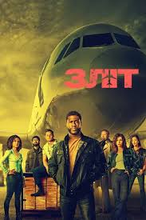
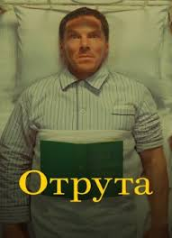

Ми були рекрутами
Український мок'юментарі-фільм про бойовий шлях 3-тьої штурмової бригади.

Зліт
Американський комедійний трилер про пограбування режисера Фелікс Ґері Ґрея за сценарієм Дена Кунка і Джеремі Донера. У фільмі знялися Кевін Гарт, Гугу Мбата-Роу, Вінсент Д'Онофріо, Урсула Корберо, Жан Рено та Сем Вортінгтон.

Отрута
Екранізація новели Роальда Дала, у якій чоловік знаходить у власному ліжку отруйну змію. Ця картина ввійшла до колекції короткометражних фільмів Веса Андерсона.

Боб Марлі: One Love
Ця історія розповість про одного з найвідоміших виконавців жанру, який припав до душі далеко не лише любителям заборонених речовин, а й мільйонам людей у світі. Боб Марлі — всесвітньо відомий музичний виконавець, який прославився завдяки своєму таланту та вмінню «зачаровувати» публіку.